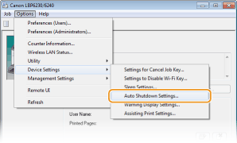
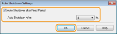

Setting Auto Shutdown
You can set up the machine to automatically turn itself OFF after it remains idle for a certain length of time. This prevents wasted power consumption caused by forgetting to turn the machine OFF. When you purchase the machine, the auto shutdown function is disabled. If you want to change this setting, perform the following procedure in the Printer Status Window.
|
|
|
If you enable the auto shutdown function, the lifetime of the toner cartridge may be shorter.
|
1
Select the machine by clicking  in the system tray.
in the system tray.
in the system tray.
2
Select [Options]  [Device Settings] [Auto Shutdown Settings].
[Device Settings] [Auto Shutdown Settings].

3
Make auto shutdown settings, and click [OK].

[Auto Shutdown after Fixed Period]
Select the check box to enable auto shutdown after the time specified with [Auto Shutdown After].
Select the check box to enable auto shutdown after the time specified with [Auto Shutdown After].
[Auto Shutdown After]
Specify the length of time until the machine executes auto shutdown, starting from the time when the machine enters sleep mode. You can select from 1 hour to 8 hours, in units of 1 hour.
Specify the length of time until the machine executes auto shutdown, starting from the time when the machine enters sleep mode. You can select from 1 hour to 8 hours, in units of 1 hour.